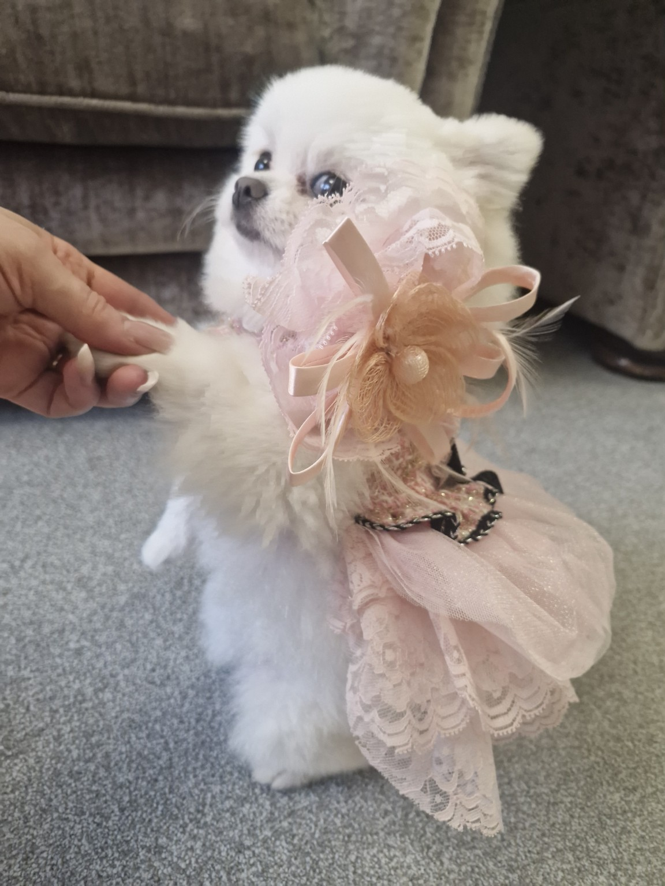
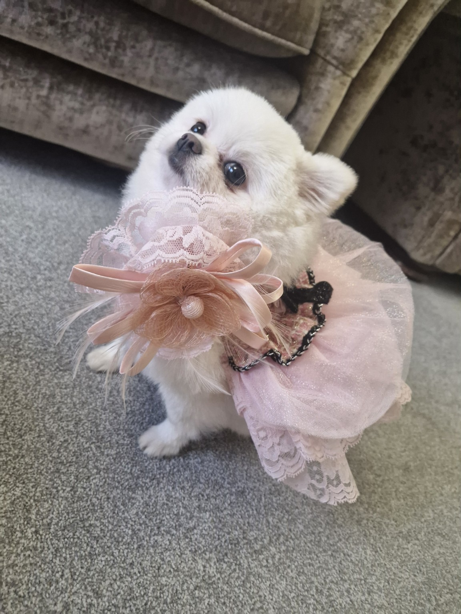
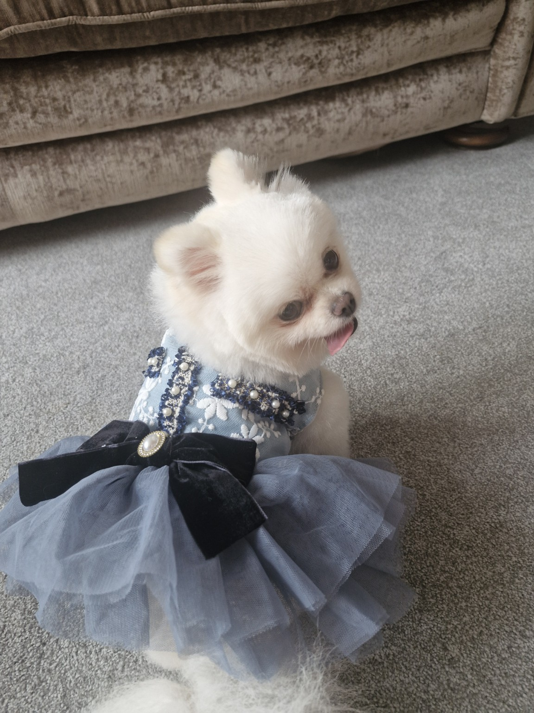
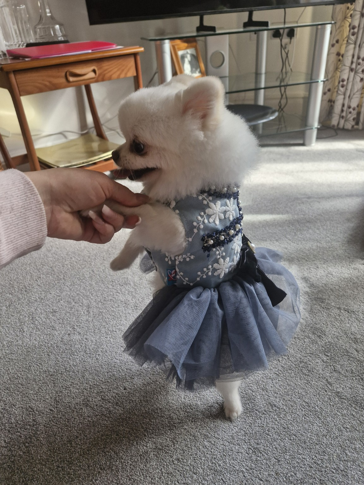
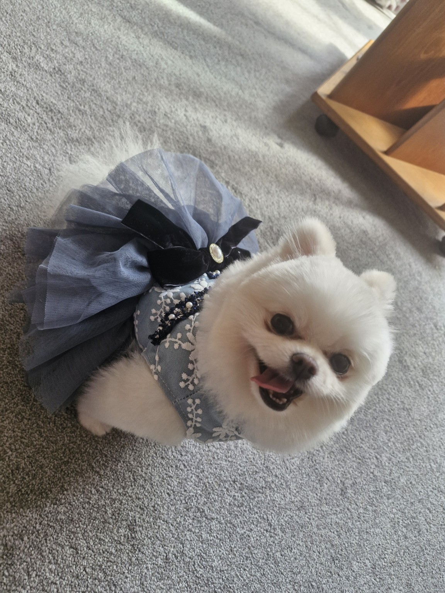
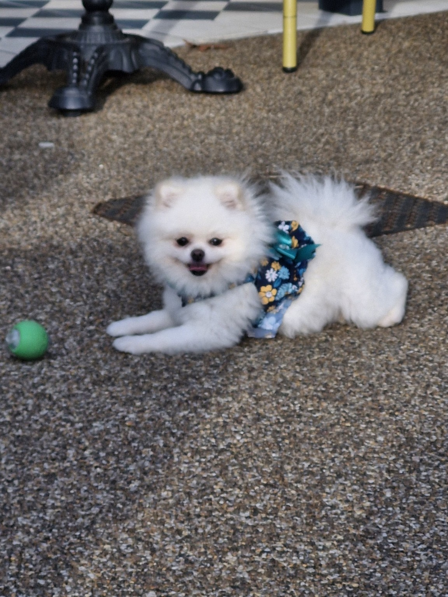
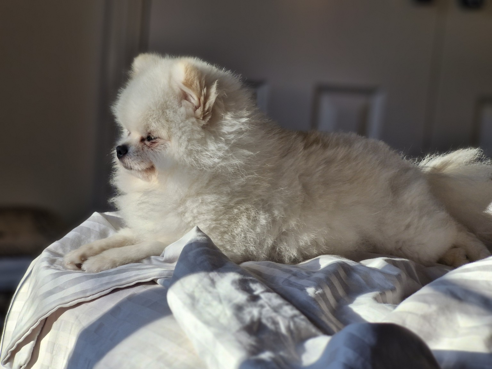
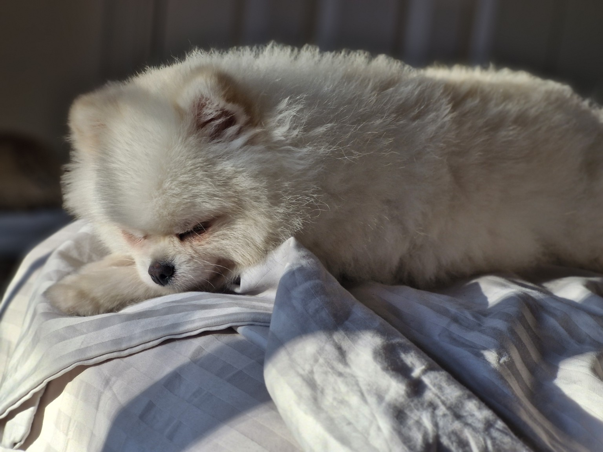
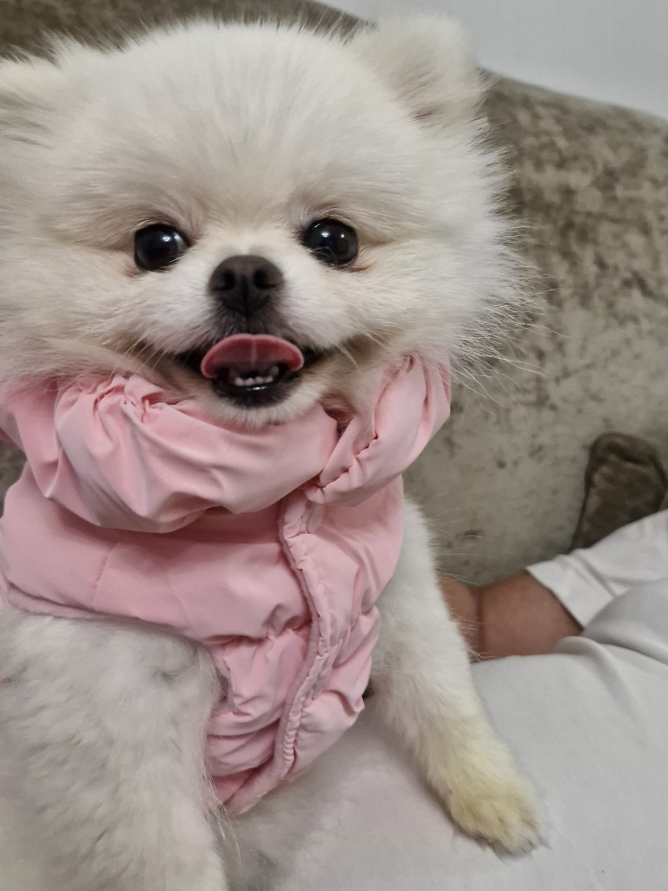

🌍 I think it all started with me
I THINK IT ALL
STARTED WITH ME
When I appeared in my human's life, a surprising number of questions appeared with me.
Where can we go together?
Where are animals genuinely welcome?
Where should we walk? Where should we travel?
How do we find a really good pet-friendly place?
Which hotel will welcome me?
Which café will let me sit inside?
Where can we find help when we need it?
And where can we meet other people and animals who see the world the same way?
One little dog.
A lot of questions.
home sweet London ♡
🇬🇧
MY CITY —
LONDON ♡

Exploring London
New streets, new smells and new discoveries.

Long walks
London is much more interesting when you explore it on four paws.

Somewhere new
There is always another corner to discover.
And this is a wonderful place for a curious little dog.
London is different every day.
Today — a huge green park.
Tomorrow — a little café.
Then the river.
A market.
An unfamiliar street.
A red bus.
A new neighbourhood.
A new place.
A new route.
I love long walks.
Stopping.
Looking.
Sniffing.
Turning down a street where I have never been before.
For me, a walk is not simply going outside.
It is a way of discovering the world.
hello, new friend ♡
IT'S A MATCH! ♡
Hi!
Now we know each other.
My name is Miso, although almost everyone calls me MISO CUTE ♡
And, to be honest, I don't mind.
I'm a German Spitz — a Pomeranian, a tiny fluffy blonde living in London.
I'm tiny. Around two kilograms.
I'm gentle, very friendly, curious and I love meeting people.
And I have lots of friends.
I hope there will soon be even more.
Because one of the nicest things about going somewhere new is never knowing who you might meet there.

Hello, friend ♡
The best adventures are better when they are shared.

New friends
Small paws can make very big friendships.

Better together
Friends make every place feel warmer.
everybody's invited ♡
🌍 THERE'S ROOM
FOR EVERYONE HERE
🐕 DOGS
🐈 CATS
🦜 BIRDS
🐇 RABBITS
🐴 HORSES
🐢 TURTLES
Cats. Dogs. Parrots. Rabbits. Horses. Turtles. Guinea pigs. Fish. Birds. Reptiles.
Big ones.
Little ones.
Fluffy ones.
Feathered ones.
Smooth ones.
Scaly ones.
With paws.With wings.
With fins.
And even without any of those things.
EVERYONE IS WELCOME HERE.
Because we don't have to be the same to belong to the same world.
PETS & DOGUE is not only about dogs.
It is about animals.
And about the people who love them.
curiosity department ♡
AND IF YOU
NEED MY HELP...
Need somewhere to go?
Want to find a pet-friendly place?
Planning a trip?
Looking for something useful?
Need help?
Or simply want to discover something new?
That is exactly what my curious little nose is for.
I explore.
I look.
I sniff around.
I notice things.
And then I bring the interesting things back to you.
At least, that is the plan.
apparently I have responsibilities now...
NOW I HAVE
MY OWN JOB AT P&D
It started very simply.
We needed useful places.
Good information.
Interesting stories.
A community.
Help.
Things for animals.
And things for the people who love them.
That is how PETS & DOGUE began to appear.
A much bigger platform, grown partly from the life of one very small dog.
That means me.
official-ish title ♡
MISO CUTE
Chief Inspiration Officer 🐾
confession time... ♡
🍰 THERE'S
SOMETHING YOU
NEED TO KNOW
ABOUT ME
I have a sweet tooth.
A very big one.
The only problem is that I am very small.
If something delicious appears somewhere, all my senses immediately switch to high alert.
But Miso has to say something serious here.
IF A DOG ASKS FOR IT — THAT DOES NOT MEAN A DOG CAN HAVE IT.
Human sweets are not dog treats, and some ingredients can be dangerous.
So I may look.
I may sniff.
I may even try my most persuasive face.
But my humans still have to check what is actually safe for me.
style is a way of life ♡
🎀 AND YES,
I'M A FASHION GIRL

Today's look ♡
Small dog. Serious wardrobe.

Dressed for the occasion
Comfort first. Cuteness immediately after.

Miso style
A little fluff makes every outfit better.
I like beautiful things.
But there is one important rule.
Beautiful should also be comfortable.
I am still a dog.
I need to walk.
Run.
Sniff.
Explore.
Turn around unexpectedly.
And occasionally change my mind about which direction we are going.
So fashion should never stop an animal from being an animal.
Style is fun.
Comfort is essential.
find. we share. ♡
FIND.
WE SHARE.
The world is full of useful things.
Some are easy to find.
Others are hidden.
A little café that welcomes dogs inside.
A beautiful walking route.
A hotel where animals are genuinely welcome.
A useful service.
A local community.
Someone who can help.
A place worth visiting.
A story worth telling.
PETS & DOGUE brings these things together.
And when I discover something interesting, I want to share it with you.
let me choose the treats ♡
LET ME CHOOSE
ALL THE TREATS.
I take my responsibilities very seriously.
Especially responsibilities involving snacks.
If I had complete control of the PETS & DOGUE budget, there is a reasonable possibility that a suspiciously large part of it would be allocated to treats.
Fortunately, the humans are still involved.
Apparently a platform needs more than snacks.
It needs useful information.
Good places.
Community.
Help.
Stories.
Ideas.
And people who care.
Fine.
We can have those too.
But I am keeping the treats department.
one world. every pet. ♡
ONE WORLD.
EVERY PET.
PETS & DOGUE began with everyday life.
Places.
Questions.
Travel.
Walks.
Useful services.
Community.
Help.
Animals.
And the people who love them.
Then the idea became bigger.
Why should useful information live in different places?
Why should finding somewhere pet-friendly be difficult?
Why shouldn't animal lovers around the world be able to discover, share and help one another?
So the little idea grew.
And it is still growing.
One world.
Every pet.
small dog. big mission. ♡
MY LITTLE
MISSION
So now I have another mission:
to find interesting things and share them with you.
And my friends can help me.
Today we might meet in London.
Tomorrow — by the sea.
Then in a new café, a park, at an event or somewhere completely unexpected.
So if one day you see a tiny fluffy blonde very busily investigating a new place...
it might be me.
Come and say hello.
And if we are far away from each other for now — find my little circle on P&D.
We will meet anyway.
see you out there ♡
🐾 SEE YOU
SOMEWHERE IN
THE WORLD
So.
I'm Miso Cute.
A tiny fluffy blonde from London.
Pomeranian.
Fashion lover.
Treat enthusiast.
Explorer.
Long-walk specialist.
Professional sniffer of interesting things.I have a gentle personality, lots of friends and an enormous curiosity about the world.
And now I have one more mission:
to find interesting things and share them with you.
And my friends can help me.
Today we might meet in London.
Tomorrow — by the sea.
Then in a new café, a park, at an event or somewhere completely unexpected.
So if one day you see a tiny fluffy blonde very busily exploring a new place...
it might be me.
Come and say hello.
And if we are far apart for now — find my little circle on P&D.
We will meet anyway.
with love,
Miso ♡